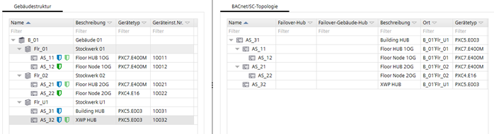
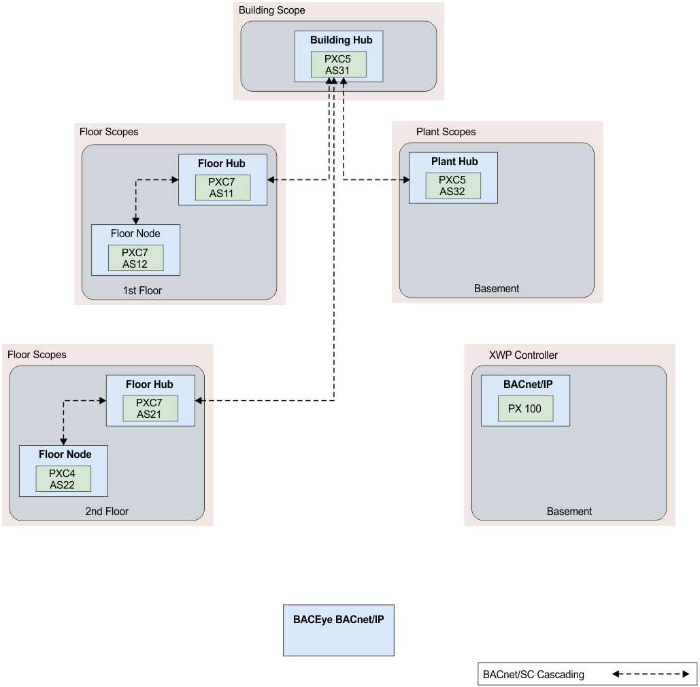

Transition building from BACnet/IP to BACnet/SC
建筑物内安装了六个 PXC 控制器和一个 PX 经典控制器。面临的挑战是如何在建筑物中分阶段实施 BACnet/SC 并且不会造成更长的通信中断。这包括说明各个控制器之间的通信类型。我们正在为客户记录进展情况。
Project Setup
现有的 IP 配置是使用建筑中心和多个楼层中心实现的。控制器的使用如下，并按 ABT 站点进行分层分配：
- One PXC5 controller serves as the buidling hub.
- < 1st Floor uses a PXC7 controller as the floor hub and 1 – n PXC7 for the nodes.
- < 2nd floor uses a PXC7 controller as the floor hub and 1 – n PXC4 for the nodes.
- A PXC5 is installed as the floor hub for the basement. Multiple PX classic controllers are integrated via the basement hub.

所有设备都通过第 2 层交换机连接，并且位于同一子网中。网络采用星型拓扑结构。
Network structure for BACnet/SC.
BACnet/SC 网络已准备好在 ABT 站点进行调试。

映射为 BACnet/SC 的建筑拓扑
为了清楚起见，此处仅描绘了每个楼层集线器的一个节点。
